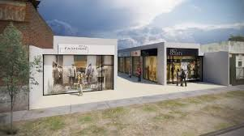

EMPRENDIMIENTO
Emprendedores locales fortalecen sus ventas mediante ferias y canales digitales
Pequeños comerciantes de la comuna han ampliado su alcance incorporando redes sociales,
catálogos en línea y participación en ferias temáticas, mejorando su visibilidad y
aumentando sus oportunidades de venta.
COMERCIO
Nuevos locales comerciales impulsan la actividad económica en el centro urbano

La apertura de nuevos negocios en sectores estratégicos ha generado mayor movimiento
de clientes y oportunidades para proveedores, consolidando un escenario favorable
para el comercio local.
INNOVACIÓN
Programa municipal apoyará a microempresas con capacitación y asesoría especializada
La iniciativa busca entregar herramientas en gestión, marketing y formalización
a pequeños empresarios, con el fin de mejorar su competitividad y sostenibilidad
en el tiempo.